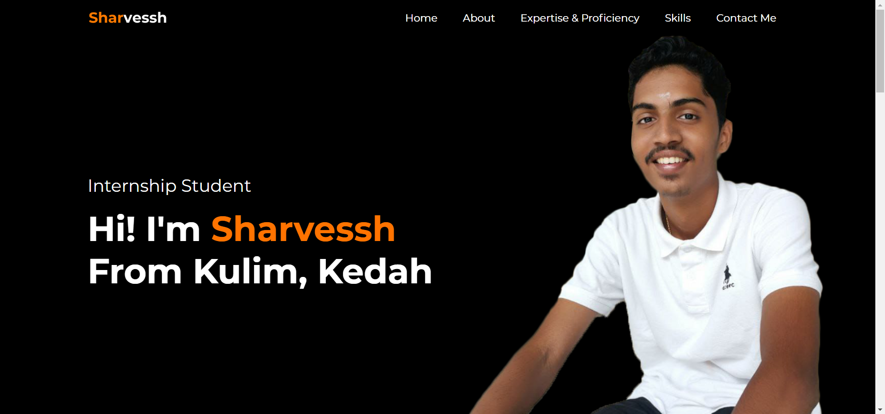

My Expertise & Proficiency
Adobe Photoshop©
- Expert in Adobe Photoshop:
- Proficient in Adobe Illustrator:
As an expert in Photoshop, I have spent years honing my skills and perfecting my craft. I am constantly experimenting with new techniques and pushing the limits of what is possible with Photoshop, which has allowed me to develop a unique and innovative approach to design. Whether it's creating digital art, retouching photos, or designing logos and branding materials, I am confident in my ability to bring a project to life with the power of Photoshop.
Here's one of my Ps edit that have been a breakthrough for my Ps journey!:

Adobe Illustrator©
Although I am not yet an expert in Illustrator, I am a dedicated learner and committed to building my skills in this powerful design software. I am always seeking out new resources and tutorials to help me master the software's tools and features, and am excited to continue growing my proficiency in Illustrator.
Microsoft ©
- Expert in Word
- Expert in Powerpoint
- Proficient in Excel
As a proficient user of Microsoft Word, Excel, and PowerPoint, I have gained extensive knowledge and experience in using these tools to effectively create and present information. I am skilled in formatting, editing, and customizing documents and spreadsheets to meet the specific needs of my clients or employers. Moreover, I am proficient in creating impactful presentations using PowerPoint, including integrating multimedia elements such as images, videos, and animations to enhance the message. My expertise in these applications has allowed me to efficiently complete tasks and projects while ensuring high-quality results.
Microsoft ©
- Proficient in Visual Studio Code
- Proficient in Visual Studio
I love working with Microsoft Visual Studio and Visual Studio Code! These powerful software development tools have become my go-to choices for crafting amazing applications. Over the months, I've gained a deep understanding of their capabilities and features, and I've honed my skills in programming languages such as C++, C#, and Python. I take pride in my ability to develop and debug applications with ease, and I've also mastered various plugins and extensions that help me streamline my work and increase productivity. What excites me most about using these tools is the ability to bring my ideas to life and create amazing software that can help people solve problems and make their lives easier. Whether I'm working on a personal project or collaborating with a team, I always strive to deliver the best possible results using my expertise in these tools.
My best work in VS Code is this website itself!
